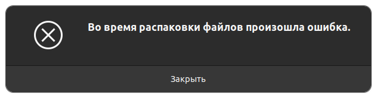

By the way, please fix cross-compilation of arti. Now there is a problem with the system openssl. Many Rust projects support cross-compilation this way: https://docs.rs/openssl/latest/openssl/#vendored or something like that.
I don’t do any Arti development. It’s better to report at https://forum.torproject.net/c/support/core-tor/18 or The Tor Project / Core / Arti · GitLab.
Да, я разобрался как кросскомпилировать в linux64 для linux32. На примере Kali Linux (Debian Testing). Правда, это не static сборка, но тоже работает. Ждем поддержку onion.
Вообще, линуксоиды могут утащить отсюда + все зависимые либы, конечно.
Так ведь к вам туда не попадешь. На форуме сидят одни чайники (не разработчики), я как-то спрашивал, никто не ответил. На гитлабе требуется ручное подтверждение (одобрение) учетки (чего я не люблю), да и не подтверждают меня, я тоже как-то пробовал.
Помогли в matrix канале tor-dev. Для гитлаба так и не пришло письмо.
Arti вообще не хочет запускаться. Может я неправильно запускаю, может сборка нестабильная, без понятия. Можете чуть подробней объяснить, или самим проверить работоспособность Arti на windows?
Я собирал с опцией static-sqlite. Может быть надо было со static (т.е. полностью static). Проверить на windows как следует я не могу за неимением и wine с rust не очень дружит. Тем не менее, я просил брата проверить запускаемость (чисто вывод --help, без коннекта) на Win7 x64 и сборка запускалась. Я также полностью проверял работоспособность в виртуальной Win7 x86. Но то была старая сборка и я не помню с какими параметрами.
Может быть проблема на Win10. У вас какая ОС и что за ошибка?
Связаться в telegram в принципе могу, но почему бы не обсудить здесь? Только, лички я не читаю.
Valdik на одном печально известном сайте, посвященном linux, писал, что tor (виндовый сишный) нужно патчить, чтобы изменить fingerprint. Я так понял, что linux не детектят, почему бы не воспользоваться линуксовым тором?
Если что, линуксовый arti можно скачать здесь:
http://mirror.yandex.ru/mirrors/voidlinux/current/arti-1.1.6_1.i686.xbps
http://mirror.yandex.ru/mirrors/voidlinux/current/arti-1.1.6_1.x86_64.xbps
Цифры могут измениться.
Это из voidlinux, поэтому под очень новый glibc. Зависит от openssl 1.1.1, sqlite, zstd (проверить можно readelf -d и ldd)
В арче что-то перестали обновлять его.
На случай, если кто не хочет компилировать.
Новый glibc, в общем-то, не проблема, можно скормить как-то так:
/new/libs/ld-linux.so.2 --library-path /new/libs arti
Это хак, но он работает даже в очень старых дистрах.
Приветствую, многоуважаемый maxmetu!
arti запускается на win7, 10, 11 проверено лично. Естественно х64 разрядность.
Подключения, как не было, так и нет. Проверю на kali, может там что то будет.
Ниже приведу логи arti на win11 и маршрут до моста.
Bridge.txt (1,7 КБ)
Log ARTI.txt (6,8 КБ)
Линуксовский тор:
TORlog.txt (1,4 КБ)
Куда подробней то)
Выше все разжовано, только в рот не положили))
arti-1.1.6-win32.exe proxy -l info -p 9150
C:\>curl -x socks5://127.0.0.1:9150 https://rutracker.org/myip
<br><big>
ip: <big><b>2001:67c:6ec:203:192:42:116:183</b> PL</big><br>
realip: <b>On</b><br><br>
ssl: TLSv1.2 ECDHE-RSA-AES128-GCM-SHA256<br><br>
ua: curl/8.0.1<br>
tm: 26/Jul/2023:21:35:51 +0300<br><br>
h: rutracker.org<br>
p.s. при этом на РосТелекоме ТОР у меня даже через snowflake перестал соединятся с нодами. только через ВНП пробивает (тор)
p.p.s. конфиг есть но не используется. мосты не прописывал там вообще[нет прав удалить “лишнее”]
Вот еще сборка (с последними коммитами) полностью static, без strip:
https://github.com/artenax/tor/releases/download/0.4.7.8/arti-1.1.6-2-win32.7z
arti-1.1.6-2-win32.exe --version
Arti 1.1.6
using runtime: TokioNativeTlsRuntime { .. }
optional features: static-sqlite, static-native-tls
Линкер mingw 12 (win32) из debian 12 x86_64. Rust 1.71.0.
C:\TOR\_arti>arti-1.1.6-2-win32.exe proxy -l info -p 9150 ←[2m2023-07-26T18:53:05Z←[0m ←[32m INFO←[0m ←[2marti←[0m←[2m:←[0m Starting Arti 1.1.6 in SOCKS proxy mode on port 9150...
>curl -I -x socks5://127.0.0.1:9150 https://rutracker.org/myip
HTTP/1.1 200 OK
Date: Wed, 26 Jul 2023 18:53:20 GMT
Content-Type: text/html
Connection: keep-alive
Access-Control-Allow-Origin: *
CF-Cache-Status: DYNAMIC
Report-To: {"endpoints":[{"url":"https:\/\/a.nel.cloudflare.com\/report\/v3?s=u%2FQ1IFFYjLBPD0J8vhY3jwDQNoPfJi17XOMwS6nxMZTxuA7eRdxJZNOq7ytbg52hW0GEQXy8OYsy%2FUcvonFFDGyWQUAclp501w1B3l3NBX3jwGbsuxsFR2vGDeu3leUtSPQhASKmLXG%2FTIDf"}],"group":"cf-nel","max_age":604800}
NEL: {"success_fraction":0,"report_to":"cf-nel","max_age":604800}
Server: cloudflare
CF-RAY: 7eced845087539ec-FRA
alt-svc: h3=":443"; ma=86400
>curl -x socks5://127.0.0.1:9150 https://rutracker.org/myip
<br><big>
ip: <big><b>2a03:e600:100::1</b> AT</big><br>
realip: <b>On</b><br><br>
ssl: TLSv1.2 ECDHE-RSA-AES128-GCM-SHA256<br><br>
ua: curl/8.0.1<br>
tm: 26/Jul/2023:21:53:30 +0300<br><br>
h: rutracker.org<br>
p.s. кстати ConEmu читаемый лог в отличии от cmd.exe
https://i.imgur.com/14j2mD5.png@Non4m3 Если даже через релеи не подключается, то тогда, наверное, они в блоке по IP. А может все-же дело в fingerprint и нужна какая-то особая сборка тора.
@LeonMskRu
Кстати, уровень логов можно изменить на trace (самый максимальный), но включить фильтрацию записей по доменам утилитой findstr (виндовый аналог линуксового grep):
arti.exe proxy -l trace -p 9150 | findstr "Got a stream for"
И можно увидеть все запросы. Но в arti.toml тогда надо добавить:
[logging]
log_sensitive_information = true
Всяко это будет полезнее, чем дефолтный лог. Если в остальном всё работает, конечно.
у меня эти сборки работают и коннектятся
но только если без мостов. ни сноуфлейк ни обфс4 не работают на арти
хотя я не в ТМ. но было увидел что у кого то не работает “вообще” и решил тоже проверить
p.s. даже мосты через тор-релай-сканер не соединились (на арти) …
На Win7:
Я успешно заводил obfs4proxy.exe с arti. Видимо, дело в настройках.
obfs4proxy.exe лучше всего положить в PATH (C:\Windows), а в конфиге указать без пути.
На линуксе:
Все транспорты работают с arti. То, что на Win7 заработал только obfs4proxy.exe скорее всего связано с тем, что только obfs4proxy.exe не требователен к системному TLS и сертификатам, в отличии от остальных транспортов. Win7 была необновленной, а go проги используют системные библиотеки, я так понял.
А вот это плохо.
Вот как раз сборка для kali (debian 12).
Зависимости:
sudo apt install libsqlite3-0 libssl3 liblzma5
у меня вин10 + РосТелеком (РФ)
тор и тот странно работает последнее время. несколько дней не соединялось через сноуфлейк. потом вдруг опять/снова заработало
а тот же арти прям без конфига сразу подключился. правда вижу одни и те же 2е гуард ноды все время. те же настройки и транспорт на арти брал рабочие с тора (ну мосты где это надо новые запрашивал)
приходится присматривать варианты. ибо не нравится что в темах про опенвпн/етк да и антизапрет имхо на грани бана по ИП
arti + bridges
Attempt 10: Unable to select a guard relay: No usable guards. Rejected 8/29 as down, then 0/21 as pending, then 21/21 as unsuitable to purpose, then 0/0 with filter.
Attempt 11: Spent too long trying to construct circuits for this request
2023-07-27T04:44:34Z WARN tor_circmgr: Failed to build preemptive circuit Preemptive { port: None, circs: 2 }: error: Tried to find or build a circuit 10 times, but all attempts failed
arti 1.1.6 (не -2 билд) + snowflake == соединился как ни странно (несколько раз запускал. не коннектилось)
This looks like a bug that was fixed very recently, 2023-07-14. The fix isn’t in Arti 1.1.6 (released 2023-06-30).
maxmetu, можно просто Макс?
Немного не пойму, это как они в блоке по IP, если до них пинг идет? Выше приведен маршрут.

Отыскал старый нетбук с убунту, попробовал на нем арти, появляется ошибка распаковки. Не исключаю тот факт что возможно что-то неправильно сделал, всё-же я не дружу с линуксами.
Кстати говоря, возможно арти не запустилась у меня на винде из-за кастомной ReviOS11. Позже попробую на официальной Windows 8.1
Я попробовал поработать с arti и отсканированными релеями (добавляемыми как обычные мосты). Ну, это очень глючно. Только 2 из 18 заработали в arti, это на интернете без цензуры. А после того, как я почистил временные файлы и перезапустил arti и вовсе подключаться перестало. У меня сборка от 8 июля.
Обычный сишный tor ни на один из 18 релеев не пожаловался и сразу подключился.
Это напомню на интернете без цензуры.
Через obfs4 мост (и напрямую) arti работает вполне нормально. Правда, смысла использовать obfs4proxy с arti в Туркменистане нет, ведь соединением на стороне провайдера заведует obfs4proxy, а не arti.
Извините, что морочил вам голову с этим arti и сам сразу не проверил.
@tango у меня сборки (выкладываемые здесь) новее 1.1.6, собранные на дату постинга.
UPD:
@why.dude на старом линуксе так просто не заработает и вообще глючная вещь.
Как, Вы, запускаете Arti на Win? Опишите подробно свои действия. Шаг за шагом, по порядку. В прошлом топике была подробная инструкция.
На счет линукса тоже было написано, да и в ссылке на инструкцию, а так же в официальном блоге тора. К чему требователен + команда установки.
Значит с Тором мы пока в пролете.
Как бы странно не прозвучало, но нам нужно подключится к мостам тор, не используя при этом сам тор
Скачал Арти для виндовс, распаковал архив, запустил PowerShell и ввел строку которая была по инструкции. Пробовал двойным кликом — открывается консоль на миллисекунду и закрывается.
Обычный Тор запустился простым двойным кликом. Но никуда подключиться не смог.
И главное чтобы эти мосты были vanilla, ибо обфс4 и так работает без махинаций, но вот проблема в том, что найти их крайне проблематично, в отличии от vanilla.
Строго говоря, то, что предлагает Valdik (tor relay scanner), это не совсем vanilla мосты, а входные релеи, которые используются как мосты, что своего рода хак. С ними и оригинальный tor не совсем стабильно работает.
Нужно патчить сишный tor, чтобы изменить fingerprint. У меня патча нет.
Я только не понял, fingerprint палится на всех системах или только на windows? Потому я и советовал проверить на linux, но не с arti, а с обычным тором. Но скорее всего это не зависит от системы, если даже на андроиде (arm) не соединяется tor.
Могу попробовать запустить на iOS, чтобы понять на всех ли устройствах он палится. Но что-то мне подсказывает что все же на всех.
(Кстати, огромное спасибо команде NTC за возможность ответа через почту, это спасает когда нет возможности обойти)
Похоже что на всех. Выше я выкладывал логи тора на линухе
Когда заработает, не пишите, что заработало. 
до заработало там еще не скоро ИМХО (на вин64)
часто виснет интернет от РосТелекома (у меня что то типа WiFi до провайдера)
после перезапуска роутера Арти не смог соединится без выкл/вкл клиента
а так если интернет не отключать то 2ой день работает https://i.imgur.com/T9ZgDw8.png
{kind=link}
пока что работает даже на РТ/РФ без “мостов”
с мостами так и не смог нормально заработать ни на вин64 ни на убунту
snowflake не находит мосты (клиент собирал последний)
obfs4 взятый из тор-броузера (3и штуки) не соединяется с ними
так же как и раньше не воспринимает релеи как мосты из торрелайсканера
да и без нормального конфига (выходные ноды по ГеоИП, прокси http/socks для выхода в интернет, етк) это пока что забавная игрушк для гиков
p.s. проблемы с мостами вроде как решились
- удалять все временные файлы C:\Users\AppData\Local\torproject\Arti\data\state
- релаи как мосты брать с сайта а не из торрелайсканера
gnu + msvc
i686 + x86_64
добавил (x86_64) arti-1.1.7-debug.exe --version
using runtime: Tokio Rustls Runtime { … }
https://github.com/laileb76/le0n/raw/main/_arti_1-1-7_windows_20230815_0035.rar
snowflake конечно медленный (у меня от 10-100 КБайт/сек до 300+ КБ. но у меня и сам интернет максимум 10 Мбит)
зато пока не отключат весь stun + зарубежные CDNы …
в сегодняшнем билде сломали логи
кучи дебаг сообщений от backtrace (хотя стоит log INFO)
взял вчерашний билд. ошибок меньше и другие. но тоже приятного мало в консоли
Snowflake блокируется, просто традиционно больше половины блокировщиков не тянут. И ещё последние сэмплы для блокировки собирали только на десктопе (с симметричным натом, вероятно в виртуалке), т.к. мобильная (андроид) версия сломана, что сказалось положительно на доступности даже там где обычно заблокировано. Но много пиров, особенно серверные с быстрым каналом, зачастую недоступны.
блокировки разные бывают
у меня вон РТ/РФ даже не весь тор оказывается забанен
вот сегодняшний оони пробе
Мосты по умолчанию 5/15 OK
Управляющие списками 1/10 OK
просто пока что в отличии от релаев/мостов или obfs4 (lyrebird) snowflake работает “сам” то есть не надо постоянно искать работающие BRIDGES
p.s. не знаю в чем разница тор и арти. но пока что он работает даже на виндоуз без транспортов
добавил arti-1.1.7-release.exe --version
using runtime: Tokio Rustls Runtime { … }
optional features: static-sqlite
в дебаг сборке стало слишком много ненужного в логах
https://github.com/laileb76/le0n/raw/main/_arti_1-1-7_windows_20230820_2302.rar
Thank you for testing Arti with bridges, @LeonMskRu. I am watching the updates.
I posted this thread in #tor-dev IRC but I don’t know if the core Tor developers have looked at it.
bridges (real bridges, obfs4/lyrebird, snowflake) work at arti
only if clear “data” from previous session
without delete saved bridges == bugs, lags or not bootstrap without any readable logs
p.s. arti without bridges work on ISP with "ban"ned TOR.exe client (dont know about Turkmenistan/Iran, only Russia Rostelekom tested)
Тестировали с одинаковыми Entry Nodes (Guards)?
по данным оони у меня почти (а часто и все) забанено
какие именно ноды по умолчанию в Арти я без понятия (ума собрать клиент под себя хватает и ладно.)
а если брать из торскана или с сайта торскана то даже тор.ехе работает
p.s. дефолтный ТОР не запускается уже давно. виснет на 5% чтоли. сейчас работает tor.exe+snowflake & арти без всего
2023-08-29T16:09:39Z INFO tor_guardmgr::guard: We have found that guard [138.201.55.70:8443+ ed25519:qr2HP/xRuIqjD0VCrEuDyQnzJY/aOanJ6OXcHJLBIuc $5b83dc983406651a0b4f6ae1940793cdd6a6f92e] is usable.
2023-08-29T16:09:39Z INFO tor_guardmgr::guard: We have found that guard [45.67.85.204:9000 ed25519:76WeNQuitd4wB5V58b0frK3lsxhA4EzXsphZ9/O8ufY $95a20d0533bc04265164241793abc7601799590e] is usable.
2023-08-29T16:09:39Z INFO tor_guardmgr::guard: We have found that guard [217.160.114.209:443 ed25519:Z/GUawhOIk948l+lZiqbtrDaaiSnA+bI/D0cfHXUmhw $627823120e3bfc03271eb3b2bc0aff1627d14d95] is usable.
я просто не знаю как из guards.json ARTI сделать bridges для TOR.EXE
2023-09-05 https://github.com/laileb76/le0n/raw/main/_arti_windows_1-1-8_20230906_1630.rar
CHANGELOG.md · main · The Tor Project / Core / Arti · GitLab
Arti 1.1.8 — 5 September 2023
стоял всю ночь. без бриджей. и вообще перестал работать 
2023-09-08T08:21:24Z WARN tor_circmgr::mgr: Request failed
2023-09-08T08:21:24Z WARN arti: connection exited with error: error: internal error (bug)
connection exited with error: error: internal error (bug)
2023-09-08T08:21:25Z WARN tor_circmgr::mgr: Request failed
2023-09-08T08:21:25Z WARN arti: connection exited with error: error: internal error (bug)
connection exited with error: error: internal error (bug)
У меня такое бывало. Помогал перезапуск с чисткой кэша. Там ведь рандом полный.
да это уже понял. не понял к чему доделывать свистелки/перделки когда клиент неработоспособен
то в логи срет (стоит INFO)
Internal error: internal error (bug) at C:\GitHub\arti\crates\tor-chanmgr\src\mgr.rs:229:54: channel build task disappeared
Captured( 0: backtrace::capture::Backtrace::new
1: tor_error::internal::Bug::new_inner
2: tor_chanmgr::mgr::AbstractChanMgr<CF>::get_or_launch::{{closure}}
3: <tor_proto::circuit::ClientCirc as tor_circmgr::build::Buildable>::create::{{closure}}
4: tor_circmgr::build::double_timeout::{{closure}}::{{closure}}
5: tokio::runtime::task::raw::poll
6: tokio::runtime::scheduler::multi_thread::worker::Context::run_task
7: tokio::runtime::task::raw::poll
8: tokio::runtime::task::UnownedTask<S>::run
9: std::sys_common::backtrace::__rust_begin_short_backtrace
10: core::ops::function::FnOnce::call_once{{vtable.shim}}
11: <alloc::boxed::Box<F,A> as core::ops::function::FnOnce<Args>>::call_once
at /rustc/5680fa18feaa87f3ff04063800aec256c3d4b4be/library\alloc\src/boxed.rs:1993:9
<alloc::boxed::Box<F,A> as core::ops::function::FnOnce<Args>>::call_once
at /rustc/5680fa18feaa87f3ff04063800aec256c3d4b4be/library\alloc\src/boxed.rs:1993:9
std::sys::windows::thread::Thread::new::thread_start
at /rustc/5680fa18feaa87f3ff04063800aec256c3d4b4be/library\std\src\sys\windows/thread.rs:57:17
12: <unknown>
13: <unknown>
Рано или поздно arti заменит сишный tor. Должны когда-нибудь доделать. А пока сишный tor работает стабильнее у меня.
у меня tor.exe только через snowflake нормально работает (без постоянной замены мостов/релеев на рабочие)
АРТИ же из коробки
C:\TOR\_arti\_target_release>connection-checker.exe
Testing direct Tor connection...
Node: [[2001: ::1]:9002 ed25519:86Ib5laN12LyikEi/MpDvrQI95asZTkXAplfQVIGsVw $3fc010e43011e91d5121f3d749dc56f8ab03bb8b]
Node: [ .108:443 ed25519:Spcg4KfKfUW+70tLabSe8S0RmZgl9EzXtOHSHN80owE $24523e7b004983ec4ca5033ebc9b7293f12f237c]
Node: [ .66:9000+ ed25519:jbI2sCuxCqr8QWUJysqKyASUU10LSUN5Mz2woa+FXcc $917eb7726d07266717f83514f2c20e0385d9466d]
direct Tor connection successful!
Я всегда использую vpn, так что мне не критично. Если додушат vpn и придется переходить на прокси решения вроде shadowsocks, а tor видимо напрямую (хотя, можно тоже через shadowsocks), то другое дело. Но у меня есть в запасе парочка редких, но живучих obfs мостов.
Дело не в АРТИ, у вашего провайдера ТСПУ глючит. По вашим же данным OONI (а там нет АРТИ) периодически подключается к некоторым из предустановленных бриджей, которые были заблокированы еще в декабре 2021 и адреса с тех пор не менялись.
Можете дежурному РКН пожаловаться.
дада. верю (нет)
АРТИ же мгновенно коннектится. видимо разные списки. как выдрать список АРТИ для ТОР.ЕХЕ я так и не понял пока
Sep 08 19:06:52.000 [notice] Bootstrapped 0% (starting): Starting
Sep 08 19:06:55.000 [notice] Starting with guard context "default"
Sep 08 19:06:57.000 [notice] Bootstrapped 5% (conn): Connecting to a relay
Sep 08 19:08:18.000 [warn] Problem bootstrapping. Stuck at 5% (conn): Connecting to a relay. (Connection timed out [WSAETIMEDOUT ]; TIMEOUT; count 10; recommendation warn; host 0D6CD875B60B762F4F65F8685BD0E39F9886340F at 45.92.33.62:443)
Sep 08 19:08:18.000 [warn] 9 connections have failed:
Sep 08 19:08:18.000 [warn] 9 connections died in state connect()ing with SSL state (No SSL object)
Sep 08 19:08:18.000 [warn] Problem bootstrapping. Stuck at 5% (conn): Connecting to a relay. (Connection timed out [WSAETIMEDOUT ]; TIMEOUT; count 11; recommendation warn; host 6C50CF56DFCC9B636964FEB7EE3B5051746E3278 at 217.76.139.49:443)
Sep 08 19:08:18.000 [warn] 10 connections have failed:
Sep 08 19:08:18.000 [warn] 10 connections died in state connect()ing with SSL state (No SSL object)
Sep 08 19:08:22.000 [warn] Problem bootstrapping. Stuck at 5% (conn): Connecting to a relay. (Connection timed out [WSAETIMEDOUT ]; TIMEOUT; count 12; recommendation warn; host EE2A621042994B29452C12FF3B6F62D9E957758C at 145.239.41.102:9001)
Sep 08 19:08:22.000 [warn] 11 connections have failed:
Sep 08 19:08:22.000 [warn] 11 connections died in state connect()ing with SSL state (No SSL object)
C:\TOR\_arti\_target_release>connection-checker.exe
Testing direct Tor connection...
Node: [ .9:443 ed25519:7uoE7wOGCho4Eg/J/Zu/ARkf4zIlX4YBGifLUO689lE $a58ba42a54f167a2352b9578f5b29131fc97b47a]
Node: [ .188:443+ ed25519:ykU5WV1Gah/5Rbn8cmx2HZ7y9FygMx9XyXjO6q6uf50 $a9bea2e0699d1f60521c8a1167340945a419d102]
Node: [ .4:443+ ed25519:Gb0eIM0O70lSlWnuMk+qH1sp4lXD10qTP9IQQw53m54 $1d3174338a1131a53e098443e76e1103cded00dc]
direct Tor connection successful!
верю (нет)
Меж тем люди на “ростелекомах” (там где никакой ТСПУ с бардаком не сладит) пользуются глюками, без АРТИ.
протон и прочии это отдельная тема. тем временем даже “рабочие” релаи вместо мостов так и не заработали “как в тор.ехе” (там они почти все коннектятся без проблем. хотя это и багофича.)
2023-09-08T16:50:40Z WARN tor_circmgr: Problem launching a timeout testing circuit:
error: Unable to select a guard relay: No usable guards.
Rejected 10/22 as down, then 0/12 as pending, then 12/12 as unsuitable to purpose, then 0/0 with filter.
2023-09-08T16:50:46Z INFO tor_guardmgr::guard: We have found that guard
[ .116:443+ ed25519:GpcBvPY0+ERzQLWLLzDYVopou2u0oFbR96Hzfm5iSnw $f62df7675006359605f699e23d18e52747012f1d] is usable.
2023-09-08T16:51:32Z WARN tor_circmgr::mgr: All circuit attempts failed due to timeout
2023-09-08T16:51:32Z WARN tor_circmgr::mgr: Request failed
0/15 + 0/10 Tor censorship test result in Russia
globalcheck проверки для адресов из сообщений connection-checker arti. Адреса для релеев известны.
Адрес заблокирован – «context deadline exceeded»
Подключение успешное – «cannot validate certificate»
Node: [ .108:443 ed25519:Spcg4KfKfUW+70tLabSe8S0RmZgl9EzXtOHSHN80owE $24523e7b004983ec4ca5033ebc9b7293f12f237c]
51.81.93.108:443
Moscow:
T2 Mobile
«Get "https://51.81.93.108:443": context deadline exceeded»
Rostelecom
«Get "https://51.81.93.108:443": context deadline exceeded»
PJSC MegaFon
«Get "https://51.81.93.108:443": context deadline exceeded»
Beeline
«Get "https://51.81.93.108:443": context deadline exceeded»
MTS PJSC
«Get "https://51.81.93.108:443": context deadline exceeded»
Node: [ .66:9000+ ed25519:jbI2sCuxCqr8QWUJysqKyASUU10LSUN5Mz2woa+FXcc $917eb7726d07266717f83514f2c20e0385d9466d]
109.70.100.66:9000
Moscow:
PJSC MegaFon
«Get "https://109.70.100.66:9000": context deadline exceeded»
Beeline
«Get "https://109.70.100.66:9000": context deadline exceeded»
T2 Mobile
«Get "https://109.70.100.66:9000": context deadline exceeded»
MTS PJSC
«Get "https://109.70.100.66:9000": context deadline exceeded»
Rostelecom
«Get "https://109.70.100.66:9000": context deadline exceeded»
Node: [ .9:443 ed25519:7uoE7wOGCho4Eg/J/Zu/ARkf4zIlX4YBGifLUO689lE $a58ba42a54f167a2352b9578f5b29131fc97b47a]
54.39.68.9:443
Moscow:
T2 Mobile
«Get "https://54.39.68.9:443": x509: cannot validate certificate for 54.39.68.9 because it doesn't contain any IP SANs»
Rostelecom
«Get "https://54.39.68.9:443": x509: cannot validate certificate for 54.39.68.9 because it doesn't contain any IP SANs»
MTS PJSC
«Get "https://54.39.68.9:443": x509: cannot validate certificate for 54.39.68.9 because it doesn't contain any IP SANs»
Beeline
«Get "https://54.39.68.9:443": x509: cannot validate certificate for 54.39.68.9 because it doesn't contain any IP SANs»
PJSC MegaFon
«Get "https://54.39.68.9:443": x509: cannot validate certificate for 54.39.68.9 because it doesn't contain any IP SANs»
Node: [ .188:443+ ed25519:ykU5WV1Gah/5Rbn8cmx2HZ7y9FygMx9XyXjO6q6uf50 $a9bea2e0699d1f60521c8a1167340945a419d102]
104.244.72.188:443
Moscow:
Beeline
«Get "https://104.244.72.188:443": context deadline exceeded»
MTS PJSC
«Get "https://104.244.72.188:443": context deadline exceeded»
T2 Mobile
«Get "https://104.244.72.188:443": context deadline exceeded»
Rostelecom
«Get "https://104.244.72.188:443": context deadline exceeded»
PJSC MegaFon
«Get "https://104.244.72.188:443": context deadline exceeded»
Node: [ .4:443+ ed25519:Gb0eIM0O70lSlWnuMk+qH1sp4lXD10qTP9IQQw53m54 $1d3174338a1131a53e098443e76e1103cded00dc]
185.220.102.4:443
Moscow:
Beeline
«Get "https://185.220.102.4:443": context deadline exceeded»
PJSC MegaFon
«Get "https://185.220.102.4:443": context deadline exceeded»
Rostelecom
«Get "https://185.220.102.4:443": context deadline exceeded»
MTS PJSC
«Get "https://185.220.102.4:443": context deadline exceeded»
T2 Mobile
«Get "https://185.220.102.4:443": context deadline exceeded»
сейчас вообще дичь творится. я иногда вообще не понимаю на кого грешить
вон было время что тупили и арти и тор.ехе и даже псифон. но только при тестах через рутрекер/клоудфларе. потом все более менее нормально заработало
https://rutracker.org/forum/viewtopic.php?p=85153345#85153345
сейчас вот первый раз на РТ/Калуга вижу блок псифона. при этом у других оно и раньше не работало
всё слищком сильно зависит И от местечковых провайдеров И от магистрали по пути к нужным ресурсам. и даже от банальных CDN и load balance в виде ДНСа многое при “тестах” разнится
2023-09-11 поломали snowflake походу. и АРТИ и ТОР матерятся
{kind=link}
В правилах ничего не менялось. Это ваш ТСПУ починили. Поздравляю.
Подольше подождите, браузерные прокси работают. Или нет
C:\TOR\_arti\_target_release>connection-checker.exe
Testing direct Tor connection...
Node: [[2a10: ]:9001 ed25519:ZUP6urBHEA0yguo29iLgihUidxRM5iuCOG+UsMJ04IY $e0534118f9be1de69179ee8bab748b8a0a428892]
Node: [ .158:443 ed25519:Q3SuqEHmbmxsWPCy8ra8Ad7ObOGoB+PYWyB3XYLMlAg $d11a3c113bbd6cc7a89cc6ab6fd7783f7749cb65]
Node: [ .216:666+ ed25519:VGNrgpBpzYRpfCWLBFn1brOpHaEKFJV7C/44pmGLD34 $64dcd892c3f4d6a434a8c3188931917db8218796]
direct Tor connection successful!
так что врядли. причём и psiphon не работает до сих пор с нормальным конфигом (настройки от Туркменистана помогают). хотя OONI пишет что псифон якобы уже не блочат
psiphon тоже есть консольный. Может быть он заработает.
snowflake возможно блочат по отпечатку. Убедитесь, что он самой последней версии. Разработчики это исправляли.
Может быть поможет дописать опцию utls-imitate=hellorandomizedalpn после stun серверов.
Но вообще похоже на ужесточение.
Пользуйтесь arti, пока он делает у вас работу. Осталось недолго.
Система должна быть достаточно простой, чтобы ее можно было починить. Мост это хорошо, раздавать OOB еще лучше. Начинают прикручивать удобства в виде moat и появляются точки сбоя и утечки. Snowflake это сложная конструкция у которой множество уязвимых мест, зато он надежно приколочен к разработчикам, можно ходить пылинки сдувать. Psiphon и прочие – сплошное удовольствие для цензора. И главное обе стороны при деле. Одни запускают, другие ловят. Ну а съезд КПК и выборы на пеньках можно же переждать, книжки почитать. В следующем году в интернете посидите, но это не точно.
псифон консольный. до выборов работал с нормальным конфигом + родным списком серверов. теперь работает только вариант для Туркменистана с этого форума
сноуфлейк в соседней теме похоже рубанули у всех. причём один вариант иногда пробивается (не тот что указан в pluggable_transports конфиге
пока еще работает webtunnel но несколько серверов что нашел… 1) только IPv6 вижу 2) в одной сети и забанить раз плюнуть
АРТИ пока слишком корявый ;
часто ошибки соединения даже при curl+IPv4
тест сайты IPv6 вообще полные логи “крашей/бэктрейсов”
нет нормальной настройки выходных нод (или я не нашел.) хотя GeoIP в клиенте зачем то есть
понятно что если других вариантов не будет… но пока работают например opera-proxy (сторонний клиент.) совсем без интернета надеюсь не останемся
2023-09-12 2.6.1 snowflake+ARTI ok.ob. как и раньше
2023-09-12T17:58:16Z INFO tor_guardmgr::guard: We have found that guard [192.0.2.4:443 via snowflake ed25519:tO9nYvNCAdAh9lPoEEv2pZ9BJq+YzmPAMY6pxoFrLuk $8838024498816a039fcbbab14e6f40a0843051fa] is usable.
2023-09-12T17:58:17Z INFO tor_ptmgr::ipc::sealed: [pt snowflake-client-2.6.1] offer created
2023-09-12T17:58:18Z INFO tor_ptmgr::ipc::sealed: [pt snowflake-client-2.6.1] trying a new proxy: timeout waiting for DataChannel.OnOpen
2023-09-12T17:58:18Z INFO tor_ptmgr::ipc::sealed: [pt snowflake-client-2.6.1] broker rendezvous peer received
2023-09-12T17:58:19Z INFO tor_ptmgr::ipc::sealed: [pt snowflake-client-2.6.1] connected
2023-09-12T17:58:22Z INFO tor_dirmgr: Marked consensus usable.
2023-09-12T17:58:22Z INFO tor_dirmgr::bootstrap: 1: Downloading microdescriptors (we are missing 67). attempt=2
2023-09-12T17:58:24Z INFO tor_dirmgr: Directory is complete. attempt=2
2023-09-12T17:58:54Z INFO tor_guardmgr::guard: We have found that guard [192.0.2.3:443 via snowflake ed25519:1zOHpg+FxqQfi/6jDLtCpHHqBTH8gjYmCKXkus1D5Ko $2b280b23e1107bb62abfc40ddcc8824814f80a72] is usable.
2023-09-13
https://github.com/laileb76/le0n/raw/main/_arti_1-1-8_windows_2-6-1-snowflake_20230913_1550.rar
2023-09-14
# arti-1.1.8-x86_64-msvc.exe --version
using runtime: Tokio[b]NativeTls[/b]Runtime { .. }
# arti-1.1.8-i686-msvc.exe --version
using runtime: Tokio[b]NativeTls[/b]Runtime { .. }
# arti-1.1.8-x86_64-gnu.exe --version
using runtime: Tokio[b]Rustls[/b]Runtime { .. }
# arti-1.1.8-i686-gnu.exe --version
using runtime: Tokio[b]Rustls[/b]Runtime { .. }
# arti-1.1.8-release.exe --version
using runtime: Tokio[b]Rustls[/b]Runtime { .. }
https://github.com/laileb76/le0n/raw/main/_arti_1-1-8_windows_2-6-1-snowflake_20230914_1725.rar
Извините, надоело
ну сейчас АРТИ+rustls лучше чем native-tls (windows10) так что дело не только в ИП. видимо и сигнатуры проверяют
причем уже писал после очистки кэша АРТИ работают даже релеи как мосты (torrelayscaner и сайт)
к сожалению нашел багофичу АРТИ коннект-чекер использует кэш. так что его надо каждый раз удалять нафик перед КАЖДЫМ тестом
в последнем билде вроде включили GeoIP но я не понял как оно работает и работает ли вообще
2023-09-22 ничего не понимаю
cargo build --release --jobs 1 --no-default-features^
--features static-sqlite,tokio,rustls,dns-proxy,harden,compression,bridge-client,pt-client,onion-service-client
cargo build --jobs 1 --no-default-features^
--features static-sqlite,tokio,rustls,dns-proxy,harden,compression,bridge-client,pt-client,onion-service-client
получаю оба arti.exe
using runtime: Tokio NativeTls Runtime { … }
optional features: static-sqlite
при этом
cargo build -p arti --release --jobs 1 --no-default-features^
–features static-sqlite,tokio,rustls,dns-proxy,harden,compression,bridge-client,pt-client,onion-service-client
using runtime: Tokio Rustls Runtime { … }
optional features: static-sqlite
https://github.com/laileb76/le0n/raw/main/_arti_1-1-11_windows_20231221_0912.rar
Arti 1.1.11
https://github.com/laileb76/le0n/raw/main/_arti_1-2-1_windows_20240427_1804.rar
для рабочих мостов есть GitHub - ValdikSS/tor-relay-scanner: Tor Relay availability checker, for using it as a bridge in countries with censorship
если есть IPv6 имейте ввиду IPv6 vs IPv4 · Issue #13 · ValdikSS/tor-relay-scanner · GitHub
хотя АРТИ вообще странно с мостами работает.
лучше экспортировать из Tor Control Panel “relays - guard” Imgur: The magic of the Internet
{kind=link}
snowflake конфиг править под себя
это разные “сервера”. могут и все 4е не работать на части провайдеров.
Azure, CDN77, AMP cache, fastly sstatic
!!! ОБЯЗАТЕЛЬНО УДАЛЯТЬ %USERPROFILE%\AppData\Local\torproject\Arti\data\state*.json !!!
arti-1.2.3-x86_64-gnu.exe using runtime: Rustls
arti-1.2.3-i686-gnu.exe using runtime: Rustls
arti-1.2.3-release.exe using runtime: Rustls
arti-1.2.3-x86_64-msvc.exe using runtime: NativeTls
arti-1.2.3-i686-msvc.exe using runtime: NativeTls
https://github.com/laileb76/le0n/raw/main/_arti_1-2-3_windows_20240517_1050.rar
собрано на windows10 64bit
работа на 32 и win7 не проверялась
https://github.com/laileb76/le0n/raw/main/arti_1-2-3_windows_ALL/i686-gnu_20240523_1930.rar
https://github.com/laileb76/le0n/raw/main/arti_1-2-3_windows_ALL/i686-msvc_20240523_1930.rar
https://github.com/laileb76/le0n/raw/main/arti_1-2-3_windows_ALL/x86_64-gnu_20240523_1930.rar
https://github.com/laileb76/le0n/raw/main/arti_1-2-3_windows_ALL/x86_64-msvc_20240523_1931.rar
arti-bench.exe
arti-testing.exe
arti.exe
connection-checker.exe
dns-resolver.exe
download-manager.exe
fixup-features.exe
hyper-http-client-example.exe
hyper-http-hs-example.exe
obfs4-checker.exe
pt-proxy.exe
https://github.com/LeonMskRu/arti_windows/releases/tag/1.2.4
в основном фиксят .onion и прочее с ними связаное
мде. до рабочего GeoIP как говорится использовать на свой страх.
curl.exe -x socks5://127.0.0.1:9150 --connect-timeout 15 https://rutracker.org/myip
ip: 2001:67c:289c:2::234 UA
причем оно еще и умудряется соединится с нодами в UA при том что якобы все в РФ забанено по IPv4
Node: [91.203.144.194:443 ed25519:ZUHh5/qgAjTVCmJne1dncf9lC9XKxEyaF5gYOx8DMe8 $b1b687c3c4ef46249d638dce77ddc7aaa39f2996]
https://metrics.torproject.org/rs.html#details/B1B687C3C4EF46249D638DCE77DDC7AAA39F2996
неверно определяет мой vps, смотри лучше тут https://1.1.1.2/cdn-cgi/trace LOC=xxx
не всё забанено с обеих сторон, иногда бывает трафик проходит
в рф забанен
ну IPv6 под вопросом часто
там с теми же нодами. IPv4 пишет в одной стране. IPv6 в другой
сейчас этот ИП и у меня недостуно. лог АРТИ уже потер за тот день
чтото проверялка совсем мух не ловит ;(
C:\ProgramData\chocolatey\bin\curl.exe -4 -x socks5://127.0.0.1:9150 --connect-timeout 15 https://rutracker.org/myip
ip: 194.26.196.71 CZ
ssl: TLSv1.2 ECDHE-RSA-AES128-GCM-SHA256
C:\ProgramData\chocolatey\bin\curl.exe -4 -x socks5://127.0.0.1:9150 --connect-timeout 15 https://1.1.1.2/cdn-cgi/trace
ip=194.26.196.71
loc=T1
tls=TLSv1.3
sni=off
warp=off
gateway=off 15:37rbi=off
kex=X25519
C:\ProgramData\chocolatey\bin\curl.exe -x socks5://127.0.0.1:9150 --connect-timeout 15 https://rutracker.org/myip
ip: 2a0b:f4c0:16c:10::1 DE
ssl: TLSv1.2 ECDHE-RSA-AES128-GCM-SHA256
C:\ProgramData\chocolatey\bin\curl.exe -x socks5://127.0.0.1:9150 --connect-timeout 15 https://1.1.1.2/cdn-cgi/trace
ip=194.26.196.71
loc=T1
tls=TLSv1.3
sni=off
warp=off
gateway=off
rbi=off
kex=X25519
C:\ProgramData\chocolatey\bin\curl.exe -x socks5://127.0.0.1:9595 --connect-timeout 15 https://1.1.1.2/cdn-cgi/trace
ip=185.243.218.204
colo=OSL
loc=T1
C:\ProgramData\chocolatey\bin\curl.exe -x socks5://127.0.0.1:9050 --connect-timeout 15 https://1.1.1.2/cdn-cgi/trace
ip=104.244.79.50
colo=FRA
loc=T1
https://github.com/LeonMskRu/arti_windows/releases/tag/1.2.4
есть кто то хорошо разбирающийся в Rust ?!
- какого фига оно каждый раз даже с установленным sccache перекомпилирует ВЕСЬ проект ?
у меня /target ± 1ГБ для каждого варианта сборки (это помимо общего)
огромный список просто нижние строчки
61M ./i686-pc-windows-gnu/release/incremental/arti-3gpeybwopn9nb/s-gxbdd927dc-j0fwys-7g4e9zavzcynktoc6ryshntmr
61M ./i686-pc-windows-msvc/release/incremental/arti-x8uzb37lgp4w/s-gxbdxslke7-1x086o9-47gvw8p4p8c91d04ww8ox5zb5
61M ./x86_64-pc-windows-gnu/release/incremental/arti-1vxotnlhm46c8/s-gxbdnge1en-z2xa0g-8i51p1jim6g3oxpjxtbkw3q1d
63M ./x86_64-pc-windows-msvc/release/incremental/arti-6gzu4j0zca7m/s-gxbe601lpl-1jldemh-i9rvfne83p3u24rsdtiomy8p
401M ./i686-pc-windows-msvc/release/deps
413M ./x86_64-pc-windows-msvc/release/deps
414M ./i686-pc-windows-gnu/release/deps
419M ./x86_64-pc-windows-gnu/release/deps
467M ./release/deps
C:\GitHub\arti\target>du -sh
3.9G .
env RUSTFLAGS=-Awarnings C:\Users\le0n.cargo\bin\cargo.exe build^
–target i686-pc-windows-gnu^
–release^ -p arti^ --no-default-features^ --features static-sqlite,rustls,bridge-client,compression,dns-proxy,harden,onion-service-client,pt-client,tokio,vanguards
env RUSTFLAGS=-Awarnings C:\Users\le0n.cargo\bin\cargo.exe build^
–target x86_64-pc-windows-gnu^
–release^ -p arti^ --no-default-features^ --features static-sqlite,rustls,bridge-client,compression,dns-proxy,harden,onion-service-client,pt-client,tokio,vanguards
env RUSTFLAGS=-Awarnings C:\Users\le0n.cargo\bin\cargo.exe build^
–target i686-pc-windows-msvc^
–release^ -p arti^ --features static
env RUSTFLAGS=-Awarnings C:\Users\le0n.cargo\bin\cargo.exe build^
–target x86_64-pc-windows-msvc^
–release^ -p arti^ --features static
- у меня древние ПК и нотебук
Intel Core i5 3550 @ 3.30GHz + MSI Z77MA-G45 (MS-7759)
Intel® Core™ i7-2630QM (6M Cache, 2.00 GHz) + Intel HM67
будет ли толк (нашел на разных сайтах) чтобы cargo build не ждать по 20+ минут при сборке всех .exe (examples) ?
[profile.release]
codegen-units = 1
lto = false
opt-level = “z”
panic = “abort”
strip = “debuginfo”
debug = 0
incremental = true
- с какого то момента стало требовать liblzma-5.dll для части таргетов
причем там ДВА варианта “клиентов” (только арти для 4х таргетов. и 4е таргета с “примерами”)
–no-default-features^ --features static-sqlite,rustls,bridge-client,compression,dns-proxy,harden,onion-service-client,pt-client,tokio,vanguards
-p arti -p connection-checker -p obfs4-checker -p arti-testing^
–features static
пытался добавить в общий cargo/config.toml
не помогло
[dependencies]
liblzma-sys = “0.3.4”
c:\cygwin\bin\ldd.exe x86_64-gnu\arti.exe | grep lzma
liblzma-5.dll => /cygdrive/c/TOR/_arti/x86_64-gnu/liblzma-5.dll (0x7ff8dfa60000
c:\cygwin\bin\ldd.exe arti-1.2.4-x86_64-gnu.exe | grep lzma
liblzma-5.dll => /cygdrive/c/TOR/_arti/liblzma-5.dll (0x7ff8dfa60000)
и если уж не убрать зависимость какую DLL брать для большей совместимости для чужих windows ?
M:_Microsoft_MSYS2\mingw64\bin\liblzma-5.dll
M:_Microsoft_MSYS2\ucrt64\bin\liblzma-5.dll
- Возможно по причине обновления зависимостей или крейтов? Второй запуск билда у меня сразу завершается. Минимальное перестроение с LTO превосходно работает в MSVC, в остальных компиляторах приходится перестраивать.
- Пробуйте. У меня в релизе с чистым target 2 мин 30 сек собирается проект (1.65 ГиБ выхода), в дебаге 2 мин 43 сек (12 ГиБ выхода). Но бинарники для публикации разумеется лучше оптимизировать.
- У меня только от sqlite3.dll зависит, но собираю msvc toolchain. Universal CRT работает с Windows 10, можете сравнить зависимости этих библиотек.
- ну там коряво может по мнению “программистов”
у меня
arti1 (cargo update -p arti) собирается только -p arti
arti2 (cargo update) собираются arti-testing / connection-checker / obfs4-checker / arti
и по очереди собирают и там и там 4е таргета
(ибо пока никто не делится windows сборками АРТИ регулярно даже через -gnu/mingw (хотя бы через cross/etc) и тем более мало кто будет заморачиваться с MSVC)
и не знаю почему даже если не делать cargo clean повторные cargo build засирают еще больше и заново вижу делается Compiling почти всего ДЛЯ КАЖДОГО таргета
Removing C:\GitHub\arti-onion\target
Removed 14117 files, 6.0GiB total
Removing C:\GitHub\arti\target
Removed 12201 files, 4.1GiB total
sccache --show-adv-stats
Cache hits (c [gcc]) 123
Cache hits (rust) 559
Cache misses (c [gcc]) 183
Cache misses (rust) 1873
Non-cacheable reasons:
crate-type 328
incremental 304
- 88
missing input 18
Cache size 1002 MiB
-
ПК старый. да и стоят --jobs 1/2 чтобы совсем система не тормозила ибо рабочий комп
это одновременно собиралось
только арти Finishedreleaseprofile [optimized] target(s) in 8m 06s
арти+етк Finishedreleaseprofile [optimized] target(s) in 14m 30s -
у меня собираются x86_64-gnu / x86_64-msvc / i686-gnu / i686-msvc
причем как писал часть с --features static
а часть с --no-default-features^ --features static-sqlite,rustls,
все еще пытаюсь найти компромис размер-vs-времясборки
только arti.exe Finished profile [optimized] target(s) in 9m 11s
Building [==> ] 90/448
несколько (4е) .exe Finished profile [optimized] target(s) in 20m 37s
Building [==> ] 455/531
[profile.release]
strip = true
codegen-units = 1
lto = true
opt-level = “z”
panic = “abort”
debug = false
incremental = true
2024-06-24 кто пользуется snowflake 4e набора “серверов” (реально работают вроде только 3и. fastfly у меня ругается на SSL/https сертификат.)
https://github.com/LeonMskRu/arti_windows/releases/tag/1.2.5
попытался собрать 1.2.6
независимо от конфига (без мостов, мосты, мосты+транспорты)
как и от флагов при сборке
крашится как arti.exe так и connection-checker/arti-testing
thread ‘tokio-runtime-worker’ panicked at C:\GitHub\arti\crates\tor-proto\src\circuit\streammap.rs:379:17: Missing open stream
2024-08-02T20:24:11Z ERROR arti::logging: Panic at C:\GitHub\arti\crates\tor-proto\src\circuit\streammap.rs:379:17: Missing open stream
даже просто
env RUSTFLAGS=-Awarnings cargo build --jobs 1 --features full,static --release
не компилится
error[E0433]: failed to resolve: could not find iterator in signal_hook
→ C:\Users\le0n.cargo\registry\src\index.crates.io-6f17d22bba15001f\signal-hook-async-std-0.2.2\src\lib.rs:62:18
error: could not compile signal-hook-async-std (lib) due to 4 previous errors
https://rutracker.org/forum/viewtopic.php?p=86545994#86545994
У меня тоже паника.
будем надеятся что всё пофиксили.
Сообщение не может быть пустым
Это не проблема Go 1.23, это проблема рассинхрона dependency hell. Себе snowflake пофиксил (тор через него работает), осталось клиент conjure, потом выложу workspace, если доделаю (надо ещё с Go 1.22.6 обновиться и подружить с псифоном и другими утилитками).
Сообщение не может быть пустым
@LeonMskRu
Кусок воркспейса для сборки транспортов go-workspace.7z (793.8 KB)